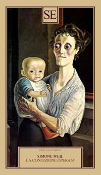
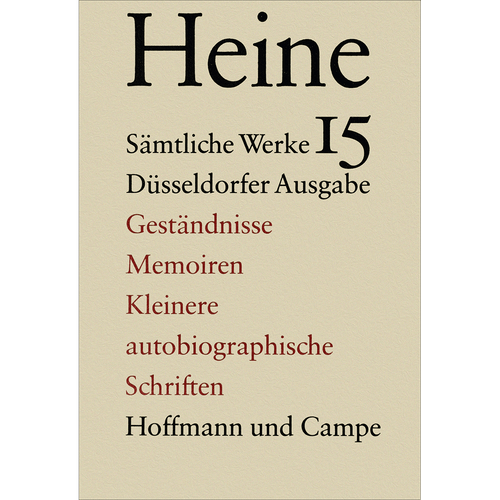

31:58 · 9 OPERE
Perché i Greci non parlano mai dell'individuo contemporaneo?
Il filo del discorso
Dr Divago domanda perché i pensatori greci, capaci a suo giudizio di anticipare quasi tutte le idee successive, non descrivano un individuo simile a quello contemporaneo. La risposta proposta è polemica: la dipendenza dalla folla, dal lavoro e dal potere ricorderebbe il comportamento che gli antichi attribuivano agli schiavi. La lezione collega questa tesi alla centralità della legge, alle riforme di Solone e al valore emancipatore della formazione.
Leggi la sintesi completaRiduci la sintesi
Nel Menone l’interrogazione dello schiavo è letta come riconoscimento di una capacità razionale comune, mentre la città della Repubblica viene presentata come superamento della servitù: quest’ultima conclusione richiede una correzione, perché Platone non abolisce in generale la schiavitù. Il discorso passa alla Scuola di Francoforte, all’industria culturale e alla stanchezza operaia descritta da Simone Weil, interpretando l’intrattenimento come prosecuzione della subordinazione. I cavalieri di Aristofane offrono poi una figura della demagogia applicata dal relatore alla politica italiana. Il confronto fra immagini moderne e sculture greche porta infine al contrasto fra un mondo ritenuto armonico e una modernità che rovescerebbe i propri ideali. Le formule di Whitehead, Hegel e Kant sono ricondotte alle rispettive fonti o testimonianze. La scheda conserva la proposta filosofica senza trasformare le generalizzazioni sul presente in dati sociologici, la critica della dipendenza in equivalenza con la schiavitù legale o la Grecia antica in una società uniformemente libera ed egualitaria.
I libri nel discorso

Process and Reality
Identificazione probabile
Note sul riferimento
Copertina: Process and Reality, corrected edition a cura di David Ray Griffin e Donald W. Sherburne, Free Press, edizione paperback del 1 luglio 1979, 448 pagine, ISBN 9780029345702. Opera originale del 1929; la corrected edition fu predisposta nel 1978. Copertina gialla con ritratto e nomi dei curatori.
Immagine autentica dell’opera, controllata visivamente; l’edizione di riferimento non è attribuita al filmato.
Whitehead: la filosofia come note a Platone; titolo non pronunciato, passo localizzato in Process and Reality, parte II, I, I, pagina 39.

Menone
Note sul riferimento
Copertina: Bompiani · Testi a fronte · 2000
Copertina autentica dell’edizione di riferimento, controllata visivamente. Non identifica l’esemplare letto o citato nel video.
Menone, Socrate e la dimostrazione geometrica con uno schiavo, circa 82b–85b.

La Repubblica
Note sul riferimento
Copertina: Laterza · La Repubblica · edizione con testo a fronte di riferimento
Immagine associata all’ISBN di riferimento e controllata visivamente; edizione e traduzione non identificate come quelle citate o lette nel video.
Politeia e Kallipolis: il relatore vi legge un superamento della schiavitù attraverso la formazione, conclusione da distinguere dal testo.

Dialettica dell’illuminismo
Note sul riferimento
Copertina: Einaudi, Piccola Biblioteca Einaudi, 2010
Edizione illustrativa dell'opera, con traduzione di Renato Solmi e introduzione di Carlo Galli; non identificata nel video.
Titolo esplicito, scritto durante la guerra e critica dell’industria culturale.

Minima moralia
Note sul riferimento
Copertina: Einaudi, 2015
Titolo esplicito di Adorno nel confronto fra lettura critica e manualistica.

La condizione operaia
Identificazione probabile
Note sul riferimento
Copertina: SE, Saggi e documenti del Novecento, 1 ottobre 2020, 320 pagine, traduzione di Franco Fortini, postfazione e note di Giancarlo Gaeta, ISBN 9788867235506. Copertina beige con immagine di una donna e un bambino. Non si attribuisce questa edizione al video.
Immagine autentica dell’opera, controllata visivamente; l’edizione di riferimento non è attribuita al filmato.
Simone Weil e la fatica della fabbrica; titolo non pronunciato, raccolta postuma identificata come riferimento probabile.

I cavalieri
Note sul riferimento
Copertina: Knights, Richer Resources Publications, traduzione inglese di Ian Johnston, ISBN paperback 9781935238744. Copertina blu, nera e oro con due mani che tirano una fila di salsicce. Edizione inglese di riferimento, non identificata come esemplare del relatore.
Immagine autentica dell’opera, controllata visivamente; l’edizione di riferimento non è attribuita al filmato.
Titolo e autore espliciti nel paragone fra demagoghi ateniesi e politica italiana.

Geständnisse (Confessioni)
Identificazione probabile
Note sul riferimento
Copertina della raccolta: COPERTINA DELLA RACCOLTA Sämtliche Werke, Düsseldorfer Ausgabe, volume 15: Geständnisse, Memoiren und kleinere autobiographische Schriften, Hoffmann und Campe, 1364 pagine, ISBN 9783455030150. Il catalogo Rhenania e questo esemplare ZVAB indicano 1983; altri cataloghi registrano 1982 per lo stesso ISBN. La divergenza è conservata e non usata per datare il testo, apparso nel 1854.
Ispezionata l’immagine intera beige e nera: autore, numero 15, tre titoli e Hoffmann und Campe leggibili. È il volume delle prose autobiografiche, non una copertina generica dell’opera omnia.
Aneddoto delle stelle attribuito a Hegel; fonte mediata rintracciata nel racconto di Heine, titolo non pronunciato nel video.

Critica della ragion pratica
Identificazione probabile
Note sul riferimento
Copertina: Bompiani, 2000
Cielo stellato e legge morale, allusione alla conclusione della Critica della ragion pratica, titolo non pronunciato.